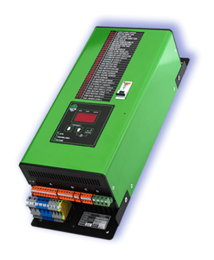

DEPREM GÜVENLİK SİSTEMİ


Neden Gereklidir?
Asansörler bina yüksekliğinde olan yapı elemanı, çalışan makinelerdir. Tiplerine göre değişmekle birlikte çalışan parçaları en az 1 tondur. Bu parçalar, insanların içine bindikleri kabin ve kabinin karşı ağırlığıdır, bu parçalar asansörün seyri esnasında bir taşıyıcı çelik halat grubunu iki ucuna asılı olarak raylarda dikine hareket ederler. Kabin yukarıya çıkarken karşı ağırlık aşağıya iner, kabin aşağıya inerken karşı ağırlık yukarıya çıkar bu hareketler olurken kabin ile karşı ağırlık her seferinde binanın tam ortasında aralarında minimum 5 cm bir boşlukla yan yana geçiş yaparlar. Karşı ağırlığın rayından çıkarak, asansör boşluğunda serbestçe sallanma ihtimali potansiyel tehlikelerden biridir. Deprem esnasında hareket halindeki asansör hemen durdurulmazsa raydan çıkmış kabin ve karşı ağırlık birbirleriyle çarpışabilirler veya kabin diğer asansör elemanlarına çarparak daha büyük hasarlara, eğer içinde insan varsa can kaybına veya sakatlanmalara neden olabilirler.
Nasıl Çalışır
Deprem Güvenlik Sistemi deprem dalgasını algıladıkları zaman asansörün hemen en yakın katta durdurulmasını ve kapıların açılması sağlamak için kumanda panosunu uyarır ve normal kullanılmasına kesin izin vermez.1. Asansör hareket halindeyken deprem olur ise elektriksel olarak uyarır ve devreye girer asansör sistemi teknik kontroller yapılana kadar elektriksel olarak bloke edilir. Bu esnada asansör iki kat arasında kalır ise sistem asansörü alçak hızda katına kadar götürür. Eğer kabinde otomatik kapı varsa otomatik kapıyı açarak içindekilerin tahliye olmasını sağlar.
2. Asansör hareketsiz haldeyken deprem olur ise hemen asansörü elektriksel olarak bloke eder. Depremi algılayan mekanik Deprem Güvenlik Sistemi deprem algıladığında tekrar kurulana kadar kilitli kalır Deprem Güvenlik Sistemi normal çalışmaya izin vermesi için sorumlu teknik personelin asansörü teknik kontrollerini yapıp normal çalışmasında sakınca görmemesinden sonra tutulan rapor ile Deprem Güvenlik Sistemi kurulduktan sonra normal çalışmaya dönülebilir.
Diğer Sistemlerden Farkımız
Bazı asansör uygulamalarına elektronik deprem sensörleri ile teçhiz edilmektedir. Bu sensörler dışarıdan bir güç kaynağından ve/veya bataryadan beslenirler. Asansörlerin imal ve çalıştırma kuralları yönetmelik ve standartlarla belirlenmiş olup harici kaynaktan beslenen güvenlik kontağına izin verilmez.
Asansörlere tesis edilecek bir güvenlik donanımının Asansör standardı EN 81-1/ 2 uygun güvenlik kontağı ihtiva etmesi gereklidir. Deprem Güvenlik Sistemi mekanik sensörlüdür. Bu sebeple depremde oluşacak manyetik alanlardan etkilenmez.